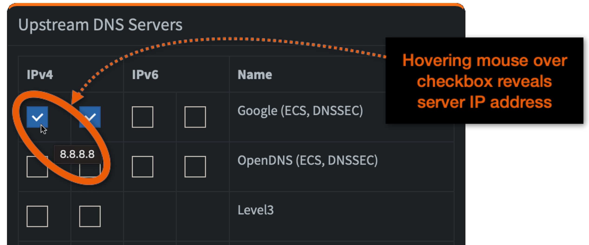

Pi-hole version 6¶
Pi-hole is a general-purpose Domain Name System server with a fantastic ability to reduce the number of advertisements appearing in user interfaces.
Pi-hole variants¶
In early 2025, Pi-hole underwent some major changes which broke compatibility with previous versions. In particular, the naming scheme for environment variables changed drastically. For IOTstack users, the immediate result of "pulling" the latest image from DockerHub was silent behavioural changes by the container.
IOTstack reacted to this problem by pinning to version 2024.07.0. This was to "hold the ring" pending a solution. The solution is that the IOTstack menu now supports two variants:
-
Pi-hole 6
The IOTstack menu refers to this as
pihole6. This variant tracks DockerHub images with thelatesttag so it will keep updating as later versions are released. This document describes version 6. -
Pi-hole 5
The IOTstack menu refers to this as
pihole. It is pinned to version 2024.07.0 which is the final release of version 5. See Pi-hole version 5.
If you are installing Pi-hole for the first time, you should choose pihole6 from the menu.
See migration if you are currently running Pi-hole 5 and want to upgrade to Pi-hole 6.
Note
You can't run both versions at the same time. That is because they both claim the same network ports.
References¶
Definitions¶
Although this documentation assumes you will be running the Pi-hole service on a Raspberry Pi, there is nothing stopping you from running Pi-hole on other platforms (eg Intel Nuc, Proxmox-VE) or Linux distributions (eg Debian or Ubuntu). This document uses the definition below to try to encompass all of those possibilities:
- “Pi-hole system”
- The host platform where the Pi-hole service is running.
Environment variables¶
In conjunction with the controls in Pi-hole's web GUI, environment variables govern much of Pi-hole's behaviour. Pi-hole's environment variables are stored inline in your compose file, in a format known as map syntax. Map syntax is used because its handling of quoted strings is superior to that of array syntax.
Although most of Pi-hole's options can be set through its web GUI, there are two key advantages to using environment variables:
- If you ever need to reset Pi-hole by erasing its persistent storage area, configuration options set using environment variables will persist while those set through the GUI may be lost; and
- On at least two occasions in its history, Pi-hole upgrades have had the effect of wiping configuration options set through the GUI, whereas options set using environment variables survived.
The service definition provided with IOTstack defines four environment variables which are discussed next.
Admin password¶
The IOTstack implementations of Pi-hole do not have an administrator password by default. This is because the relevant IOTstack-defined environment variable defaults to a null string.
If you wish to define a password to protect Pi-hole's web interface, you do it like this:
$ cd ~/IOTstack
$ echo "PIHOLE_ADMIN_PASSWORD=«YourPasswordHere»" >>./.env
$ docker-compose up -d pihole6
Each time the Pi-hole container is launched, it checks for the presence or absence of a password, then reacts like this:
-
If a password is defined but is a null string (the default for IOTstack):
- No admin password is set;
- Any previous admin password is cleared;
- You will be able to connect to Pi-hole's web interface without providing a password (you won't even see the login screen); and
- The main menu (≡) will not contain a logout command.
-
If a password is defined and has a non-null value, that value will become the admin password.
-
If you don't define a password (either an explicit null string or an actual password value) then Pi-hole behaves like this:
-
If this is the first time Pi-hole has been launched, a random password is generated. Pi-hole senses "first launch" if it has to initialise its persistent storage area. See also getting a clean slate. You can discover the password by running:
$ docker logs pihole6 | grep randomDocker logs are cleared each time a container is terminated or re-created so you need to run that command before the log disappears!
-
Otherwise, whatever password was set on the previous launch will be re-used.
-
changing the password via the command line
Some Pi-hole documentation on the web recommends a command like the following to change Pi-hole's admin password:
$ docker exec pihole6 pihole setpassword '«yourPasswordHere»'
The setpassword command is really intended for "native" installations of Pi-hole. It is not really appropriate to use it when Pi-hole is running in a Docker container. In particular, the command will be rejected if a password is already being set via an environment variable.
Logging¶
You can control the amount of information Pi-hole retains about your DNS queries using the "Privacy Settings" tab of the "Settings" group. The default is "Show & record everything".
If you choose any option except "Anonymous mode", then Pi-hole divides the logging store into two parts:
- Entries which are more recent than 24 hours; and
- Entries which are older than 24 hours.
In the "System" tab of the "Settings" group is a Flush logs (last 24 hours) button. Clicking that button erases all log entries which are more recent than 24 hours. The button does not erase entries which are older than 24 hours.
Retention of log entries older than 24 hours is controlled by the following environment variable where the value is in days:
FTLCONF_database_maxDBdays: 365
Depending on your DNS activity, the database where the log entries are stored can become quite large. Setting this variable to a shorter period will help you control the amount of storage Pi-hole consumes on disk and in your backups.
Tip
Changing the number of days to be less than the previous setting will not reduce the size of the logging database. Although Pi-hole will implement the change, the SQLite database where the logs are written retains the released storage for subsequent re-use. If you want to reclaim that space, run the following command:
$ sqlite3 ~/IOTstack/volumes/pihole6/etc-pihole/pihole-FTL.db "vacuum;"
The command should not need sudo because pi is the owner by default. There is no need to terminate Pi-hole before running this command (SQLite handles any contention).
Recursive resolvers¶
You can control which public DNS servers are used by PiHole when it needs to refer queries to the Internet. You do this by enabling or disabling checkboxes in the "Upstream DNS Servers" panel of the "DNS" tab in the "Settings" group.
The default is to use the two Google IPv4 DNS servers which correspond with 8.8.8.8 and 8.8.4.4, respectively. The IOTstack service definition implements that default using an environment variable:
FTLCONF_dns_upstreams: 8.8.8.8;8.8.4.4
This variable takes a semi-colon-separated list of DNS servers. You can discover the IP address associated with a checkbox by hovering your mouse pointer over the checkbox and waiting for a tool-tip to appear:
| Figure 1: Upstream DNS Servers |
|---|
|  |
The list is not limited to two entries. You can add as many upstream servers as you need. You are also not restricted to the IP addresses that are mentioned in the GUI.
Advanced variables¶
(advanced) reverse DNS query handling
First, understand that there are two basic types of DNS query:
-
forward queries:
- question: "what is the IP address of fred.home.arpa?"
- answer: 192.168.1.100
-
reverse queries:
- question: "what is the domain name for 192.168.1.100?"
- answer: fred.home.arpa
Pi-hole has its own built-in DNS server which can answer both kinds of queries. The implementation is useful but doesn't offer all the features of a full-blown DNS server like BIND9. If you decide to implement a more capable DNS server to work alongside Pi-hole, you will need to understand the Pi-hole environment variables discussed in this section.
This part of the discussion is actually specific to Pi-hole 5. It is helpful to understand the concepts that are associated with how Pi-hole 5 implemented this feature so that you can apply the same principles in Pi-hole 6. The variables are:
-
REV_SERVER:If you configure Pi-hole's built-in DNS server to be authoritative for your local domain name,
REV_SERVER: falseis appropriate, in which case none of the variables discussed below has any effect.Setting
REV_SERVER: trueallows Pi-hole to forward queries that it can't answer to a local upstream DNS server, typically running inside your network. -
REV_SERVER_DOMAIN: home.arpa(where "home.arpa" is an example)The Pi-hole 5 documentation says:
"If conditional forwarding is enabled, set the domain of the local network router".
The words "if conditional forwarding is enabled" mean "when
REV_SERVER: true".However, this option really has little-to-nothing to do with the "domain of the local network router". Your router may have an IP address that reverse-resolves to a local domain name (eg gateway.home.arpa) but this is something most routers are unaware of, even if you have configured your router's DHCP server to inform clients that they should assume a default domain of "home.arpa".
This variable actually tells Pi-hole the name of your local domain. In other words, it tells Pi-hole that a fully-qualified domain name like "fred.home.arpa" is part of the "home.arpa" domain because the suffixes match.
When you set
REV_SERVER_DOMAIN: home.arpayou are telling Pi-hole that a forwards query where the suffix of a fully-qualified domain name matcheshome.arpashould be sent to theREV_SERVER_TARGET: 192.168.1.5(discussed further down). -
REV_SERVER_CIDR: 192.168.1.0/24(where 192.168.1.0/24 is an example)The Pi-hole 5 documentation says:
"If conditional forwarding is enabled, set the reverse DNS zone (e.g. 192.168.0.0/24)".
This is correct but it lacks detail.
The string "192.168.1.0/24" defines your local subnet using Classless Inter-Domain Routing (CIDR) notation. Most home subnets use a subnet-mask of 255.255.255.0. If you write that out in binary, it is 24 1-bits followed by 8 0-bits, as in:
255 . 255 . 255 . 0 11111111 11111111 11111111 00000000Those 24 one-bits are where the
/24comes from in192.168.1.0/24. When you perform a bitwise logical AND between that subnet mask and 192.168.1.0, the ".0" is removed (conceptually), as in:192.168.1.0 AND 255.255.255.0 = 192.168.1What it means is:
- The network prefix is "192.168.1".
- The this host on the 192.168.1 network is the reserved address "192.168.1.0". It is better to think of this as "the network prefix followed by all-zero bits in the host portion". It is not common to see the .0 address used in practice. A device either knows its IP address or it doesn't. If it doesn't then it won't know its prefix so it will use 0.0.0.0 as a substitute for "this".
- The range of IP addresses available for allocation to hosts on this subnet is 192.168.1.1 through 192.168.1.254 inclusive.
- All hosts on the 192.168.1 network (ie broadcast) is the reserved address "192.168.1.255". It is better to think of this as "the network prefix followed by all-one bits in the host portion".
When you set
REV_SERVER_CIDR: 192.168.1.0/24you are telling Pi-hole that reverse queries for the host range 192.168.1.1 through 192.168.1.254 should be sent to theREV_SERVER_TARGET: 192.168.1.5(discussed next). -
REV_SERVER_TARGET: 192.168.1.5(where 192.168.1.5 is an example):This option tells Pi-hole where to send queries that it can't answer itself. In other words, 192.168.1.5 is where Pi-hole will send both:
- forwards queries for *.home.arpa; and
- reverse queries for 192.168.1.*
The Pi-hole 5 documentation says:
"If conditional forwarding is enabled, set the IP of the local network router".
It may be appropriate to set
REV_SERVER_TARGETto the IP address of your router (eg 192.168.1.1) but, unless your router is running as an authoritative DNS server (not impossible but uncommon), the router will likely just relay any queries to your ISP's DNS servers (or other well-known DNS servers like 8.8.8.8 or 1.1.1.1 if you have configured those). Those external DNS servers are unlikely to be able to resolve queries for names in home.arpa, and won't be able to do anything sensible with reverse queries if your home network uses RFC1918 addressing (which most do: 192.168.x.x being the most common example).Forwarding doesn't guarantee that 192.168.1.5 will be able to answer the query. The DNS server at 192.168.1.5 may well relay the query to yet another server. In other words, this environment variable does no more than set the next hop.
If you are planning on using this option, the target really needs to be a DNS server that is authoritative for your local domain and that, pretty much, is going to be a local upstream DNS server inside your home network like another Raspberry Pi running BIND9.
Now I will explain how to apply all of the foregoing to Pi-hole 6.
Tip:
- If you read the section on Conditional forwarding in the Pi-hole 6 User Interface (or its online User Guide) you will probably be left very confused. You are not alone. I recommend ignoring it entirely.
Pi-hole 6 uses a single environment variable to encapsulate all of the concepts covered by Pi-hole 5's four environment variables. The following is a template which uses the Pi-hole 5 variable names to show how the variable should be assembled:
FTLCONF_dns_revServers: '«REV_SERVER»,«REV_SERVER_CIDR»,«REV_SERVER_TARGET»,«REV_SERVER_DOMAIN»'
Here's an example which replaces those tokens with the values used in the Pi-hole 5 example above:
FTLCONF_dns_revServers: 'true,192.168.1.0/24,192.168.1.5,home.arpa'
The one thing you can do with Pi-hole 6 that you could not do with Pi-hole 5 is to set up multiple local servers. Because a working DNS is so critical, it is always a good idea to have redundant servers so, even in a home network, a pair of Pi-holes and a pair of BIND9 servers may seem appropriate. Let's suppose your two BIND9 servers are running on 192.168.1.5 and 192.168.1.6. To implement that, you repeat the string with a semicolon separator:
FTLCONF_dns_revServers: 'true,192.168.1.0/24,192.168.1.5,home.arpa;true,192.168.1.0/24,192.168.1.6,home.arpa'
Variable discovery¶
Almost all controls that you can set in Pi-hole's web interface can also be set via environment variable.
Let's suppose you are looking at the "Web Interface" tab of Pi-hole's "Settings". You decide to try out the "Star Trek LCARS" theme and, subsequently, that you would like to apply that setting using an environment variable.
Here's a recipe for discovering the correct variable name:
- In Pi-hole's web interface, open the main menu (☰ icon) at the top, right of the display and choose "Documentation". This opens another browser window.
- Click the Search icon (magnifying class) and start typing the name of what you are looking for. In this case, the appropriate search term would be "Theme".
- Under "Configuration", each mention of "theme" is a link. Click one.
- You will see a list of allowed values. The one associated with "Star Trek LCARS" is "lcars".
- A little further down are three alternate views labelled "TOML", "CLI" and "Environment (Docker Compose)". Click the last one. The display will change to reveal:
environment:
FTLCONF_webserver_interface_theme: 'default-auto'
Replace default-auto with lcars then paste the result into your compose file. The next time you "up" the container, Pi-hole will adopt the "Star Trek LCARS" theme, and the UI controls will become locked to that theme.
Pi-hole Web GUI¶
Connecting to the GUI¶
Point your browser to:
http://«your_ip»:8089/admin
where «your_ip» can be:
- The IP address of the Pi-hole system.
- The domain name of the Pi-hole system.
- The multicast DNS name (eg "raspberrypi.local") of the Pi-hole system.
Adding local domain names¶
Login to the Pi-hole web interface: http://«your_ip»:8089/admin:
-
In the left hand panel, click "Settings", then click "Local DNS Records".
Figure 2: Adding local domain names 
-
Type a fully-qualified domain name into the "Domain" field 🅐. For example,
raspberrypi.home.arpa. - Type the IP address into the "Associated IP" field 🅑. For example,
192.168.1.10. - Click + 🅒.
Now you can use raspberrypi.home.arpa as the domain name for the Raspberry Pi in your whole local network. You can also add domain names for your other
devices, provided they too have static IPs.
Why .home.arpa?
Because it's expressly reserved for home use. In principle you can use any domain name you like, providing it is unique. This includes a domain you have purchased from a registrar, or a sub-domain thereof. You can use also use .internal. Please don't use the .local domain because that's reserved for multicast DNS (mDNS), aka Rendezvous, aka Bonjour, aka ZeroConf, aka Avahi.
Configure your Pi to use Pi-hole¶
Your Pi-hole system does not have to use the Pi-hole container for its own DNS services and, in many ways, it is better if it does not. That's because the arrangement creates some chicken-and-egg situations. Examples:
- If the Pi-hole system needs DNS services at boot time before the Pi-hole container is running, the boot may stall;
- If the Pi-hole container is down when another process (eg
aptordocker-compose) needs to do something that depends on DNS services being available.
If you decide to use the Pi-hole container to provide DNS services to your Pi-hole system then you should also set up a fall-back to at least one well-known public DNS server that will kick in whenever your Pi-hole container is down.
Please note that this only helps the Pi-hole system. It does not help other clients in your network to obtain DNS services when your Pi-hole container is down. The intention is to mitigate the chicken-and-egg situations mentioned above so that your Pi-hole container maintains high availability.
First, determine whether Network Manager is running on your system:
$ systemctl is-active NetworkManager
If the response is:
activethen follow the NetworkManager instructions;- otherwise follow the non-NetworkManager instructions
NetworkManager¶
The first step is to determine the «connection» name for each physical network interface that is active on your Pi-hole system. For example, if your Pi is connected to Ethernet the physical interface is likely to be defined as eth0:
$ nmcli -g GENERAL.CONNECTION dev show "eth0"
Wired connection 1
"Wired connection 1" is the name of the «connection».
Additional interfaces
If your Pi is also connected to WiFi, substitute wlan0, re-run the command, and make a note of the «connection» name. Do the same for any other physical interfaces.
Run the following command for each physical interface, substituting «connection»:
$ sudo nmcli con mod "«connection»" ipv4.dns "127.0.0.1,8.8.8.8"
Once you have run that command for each physical interface, activate the change(s) by running:
$ sudo systemctl restart NetworkManager
You can check your work by running:
$ nmcli -g ipv4.dns con show "«connection»"
Detailed explanations of these commands
-
In the
sudo nmcli con modcommand,"127.0.0.1,8.8.8.8"is an ordered, comma- (or space-) separated list:-
The
127.0.0.1substring instructs the Pi-hole system to direct DNS queries to the loopback address. Port 53 is implied. If the Pi-hole container is running in:- non-host mode, Docker is listening to port 53 and forwards the queries to the Pi-hole container;
- host mode, the Pi-hole container is listening to port 53.
-
if there is no response from the Pi-hole container, the
8.8.8.8substring instructs the Pi-hole system to forward the query to that IP address, which is a well-known DNS service provided by Google. Although queries for local domain names will not resolve if your Pi-hole container is down, Google's DNS will resolve global domain names.
-
-
The
systemctl restart NetworkManagercommand instructs the operating system running on your Pi-hole system to apply your changes by rebuilding the active resolver configuration.
non-NetworkManager¶
Run these commands:
$ echo "name_servers=127.0.0.1" | sudo tee -a /etc/resolvconf.conf
$ echo "name_servers_append=8.8.8.8" | sudo tee -a /etc/resolvconf.conf
$ echo "resolv_conf_local_only=NO" | sudo tee -a /etc/resolvconf.conf
$ sudo resolvconf -u
Detailed explanations of these commands
-
name_servers=127.0.0.1instructs the Pi-hole system to direct DNS queries to the loopback address. Port 53 is implied. If the Pi-hole container is running in:- non-host mode, Docker is listening to port 53 and forwards the queries to the Pi-hole container;
- host mode, the Pi-hole container is listening to port 53.
-
name_servers_append=8.8.8.8instructs the Pi-hole system to fail-over to 8.8.8.8 if Pi-hole does not respond. You can replace8.8.8.8(a Google service) with:- Another well-known public DNS server like
1.1.1.1(Cloudflare). - The IP address(es) of your ISP's DNS hosts (generally available from your ISP's web site).
- The IP address of another DNS server running in your local network (eg BIND9).
- The IP address of your home router. Most home routers default to the ISP's DNS hosts but you can usually change your router's configuration to bypass your ISP in favour of public servers like 8.8.8.8 and 1.1.1.1.
You need slightly different syntax if you want to add multiple fallback servers. For example, suppose your fallback hosts are a local server (eg 192.168.1.2) running BIND9 and 8.8.8.8. The command would be:
$ echo 'name_servers_append="192.168.1.2 8.8.8.8"' | sudo tee -a /etc/resolvconf.conf - Another well-known public DNS server like
-
resolv_conf_local_only=NOis needed so that 127.0.0.1 and 8.8.8.8 can coexist. - The
resolvconf -ucommand instructs the operating system running on your Pi-hole system to rebuild the active resolver configuration. In principle, that means parsing/etc/resolvconf.confto derive/etc/resolv.conf. This command can sometimes return the error "Too few arguments". You should ignore that error.
flowchart LR
RERECONF["/etc/resolvconf.conf"] --- UP([resolvconf -u])
DHCP[DHCP provided DNS-server] --- UP
UP -- "generates" --> RECONF["/etc/resolv.conf"]
classDef command fill:#9996,stroke-width:0px
class UP commandAdvanced options: ignoring DHCP provided DNS-servers, local domain name search
-
If you wish to prevent the Pi-hole system from including the address(es) of DNS servers learned from DHCP, you can instruct the DHCP client running on the Pi-hole system to ignore the information coming from the DHCP server:
$ echo 'nooption domain_name_servers' | sudo tee -a /etc/dhcpcd.conf $ sudo service dhcpcd reload $ sudo resolvconf -u -
If you have followed the steps in Adding local domain names to define names for your local hosts, you can inform the Pi-hole system of that fact like this:
$ echo 'search_domains=home.arpa' | sudo tee -a /etc/resolvconf.conf $ sudo resolvconf -uThat will add the following line to
/etc/resolv.conf:search home.arpaThen, when you refer to a host by a short name (eg "fred") the Pi-hole system will also consider "fred.home.arpa" when trying to discover the IP address.
Using Pi-hole as your local DNS¶
To use the Pi-hole container to provide DNS services in your LAN, you need to assign the Pi-hole system a fixed IP-address and configure this IP as your DNS server.
Fixed IP address for Pi-hole¶
If you want clients on your network to use Pi-hole for their DNS, the Pi-hole system must have a fixed IP address. It does not have to be a static IP address (in the sense of being hard-coded into the Pi-hole system). The Pi-hole system can still obtain its IP address from DHCP at boot time, providing your DHCP server (usually your home router) always returns the same IP address. This is usually referred to as a static binding and associates the Pi-hole system's MAC address with a fixed IP address.
Keep in mind that many Raspberry Pis have both Ethernet and WiFi interfaces. It is generally prudent to establish static bindings for both network interfaces in your DHCP server.
You can use the following command to discover the MAC addresses for your Raspberry Pi's Ethernet and WiFi interfaces:
$ for I in eth0 wlan0 ; do ip link show $I ; done
2: eth0: <BROADCAST,MULTICAST,UP,LOWER_UP> mtu 1500 qdisc mq state UP mode DEFAULT group default qlen 1000
link/ether dc:a6:32:4c:89:f9 brd ff:ff:ff:ff:ff:ff
3: wlan0: <BROADCAST,MULTICAST,UP,LOWER_UP> mtu 1500 qdisc pfifo_fast state UP mode DEFAULT group default qlen 1000
link/ether e5:4f:01:41:88:b2 brd ff:ff:ff:ff:ff:ff
In the above:
- The MAC address of the Ethernet interface is "dc:a6:32:4c:89:f9"
- The MAC address of the WiFi interface is "e5:4f:01:41:88:b2"
If a physical interface does not exist, the command returns "Device does not exist" for that interface. If you prefer, you can also substitute the ifconfig command for ip link show. It's just a little more wordy.
Configure clients to use Pi-hole¶
In order for Pi-hole to block ads or resolve anything, clients need to be told to use it as their DNS server. You can either:
- Adopt a whole-of-network approach and edit the DNS settings in your DHCP server so that all clients are given the IP address of the Pi-hole system to use for DNS services when a lease is issued.
- Adopt a case-by-case (manual) approach where you instruct particular clients to obtain DNS services from the IP address of the Pi-hole system.
Option 1 (whole-of-network) is the simplest approach. Assuming your Pi-hole system has the static IP 192.168.1.10:
-
Go to your network's DHCP server. In most home networks, this will be your Wireless Access Point/WLAN Router:
- Login into its web-interface
- Find where DNS servers are defined (generally with DHCP controls)
- Change all DNS fields to
192.168.1.10
-
All local clients have to be rebooted. Without this they will continue to use the old DNS setting from an old DHCP lease for quite some time.
Option 2 (case-by-case) generally involves finding the IP configuration options for each host and setting the DNS server manually. Manual changes are usually effective immediately without needing a reboot.
advanced configurations
Setting up a combination of Pi-hole (for ad-blocking services), and/or a local upstream DNS resolver (eg BIND9) to be authoritative for a local domain and reverse-resolution for your local IP addresses, and decisions about where each DNS server forwards queries it can't answer (eg your ISP's DNS servers, or Google's 8.8.8.8, or Cloudflare's 1.1.1.1) is a complex topic and depends on your specific needs.
The same applies to setting up a DHCP server (eg DHCPD) which is capable of distinguishing between the various clients on your network (ie by MAC address) to make case-by-case decisions as to where each client should obtain its DNS services.
If you need help, try asking questions on the IOTstack Discord channel.
other containers¶
Docker provides a special IPv4 address 127.0.0.11. The virtual service at that address listens to DNS queries and resolves them according to the host system's /etc/resolv.conf. Containers usually rely on this to perform DNS lookups. This is nice as it won't present any surprises as DNS lookups on both the host and in the containers will yield the same results.
It's possible to make DNS queries directly cross-container, and even supported in some rare use-cases.
DNS interrelationships¶
Consider the following excerpts from the IOTstack service definition for Pi-hole:
environment:
FTLCONF_dns_upstreams: 8.8.8.8;8.8.4.4
dns:
- 127.0.0.1
- 1.1.1.1
What this means is any process running inside the Docker container will first try the container itself (ie the Pi-hole DNS service) but that, in the absence of a response, queries will be directed to 1.1.1.1 (Cloudflare). This is intended to cater for any situation where the Pi-hole service is not running (eg still booting up or stuck in a restart loop).
Once the Pi-hole DNS service is established and responding to queries, the dns: clause is no longer relevant. The ordering is then governed by FTLCONF_dns_upstreams with an implied "self" (127.0.0.1) stuck on the front:
127.0.0.1 8.8.8.8 8.8.4.4
Now let's add one more wrinkle:
environment:
FTLCONF_dns_revServers: 'true,192.168.1.0/24,192.168.1.5,home.arpa'
Queries are handled like this:
- If Pi-hole is authoritative for the domain name being queried (either forwards or reverse), then Pi-hole will answer.
- If the domain name being queried is mentioned in a block list, the query will be blocked (ie Pi-hole will return 0.0.0.0).
-
If either of the following is true:
- the suffix of the domain name being queried matches
home.arpa; or - the IP address being reverse-resolved lies within the 192.168.1.0/24 subnet,
then the query will be redirected to 192.168.1.5.
- the suffix of the domain name being queried matches
-
Otherwise the query will be forwarded round-robin to 8.8.8.8 or 8.8.4.4.
In the absence of FTLCONF_dns_revServers, simply omit step 3.
Testing and Troubleshooting¶
Make these assumptions:
-
You have followed the instructions above to add these lines to
/etc/resolvconf.conf:name_servers=127.0.0.1 name_servers_append=8.8.8.8 resolv_conf_local_only=NO -
The Pi-hole system has the IP address 192.168.1.10 which it obtains as a static assignment from your DHCP server.
- You have configured your DHCP server to provide 192.168.1.10 for client devices to use to obtain DNS services (ie, you are saying clients should use Pi-hole for DNS).
The result of the configuration appears in /etc/resolv.conf:
$ cat /etc/resolv.conf
# Generated by resolvconf
nameserver 127.0.0.1
nameserver 192.168.1.10
nameserver 8.8.8.8
Interpretation:
nameserver 127.0.0.1is present because ofname_servers=127.0.0.1nameserver 192.168.1.10is present because it was learned from DHCPnameserver 8.8.8.8is present because ofname_servers_append=8.8.8.8
The fact that the Pi-hole system is effectively represented twice (once as 127.0.0.1, and again as 192.168.1.10) does not matter. If the Pi-hole container stops running, the Pi-hole system will bypass 192.168.1.10 and fail over to 8.8.8.8, failing back to 127.0.0.1 when the Pi-hole container starts again.
Install dig:
$ sudo apt install dnsutils
Test that Pi-hole is correctly configured (should respond 192.168.1.10):
$ dig raspberrypi.home.arpa @192.168.1.10
To test on another machine if your network's DNS configuration is correct, and an ESP will resolve its DNS queries correctly, restart the other machine to ensure DNS changes are updated and then use:
$ dig raspberrypi.home.arpa
This should produce the same result as the previous command.
If this fails to resolve the IP, check that the server in the response is
192.168.1.10. If it's 127.0.0.xx check /etc/resolv.conf begins with
nameserver 192.168.1.10. If not, check the machine is configured to use DHCP
and revisit Pi-hole as DNS.
Microcontrollers¶
If you want to avoid hardcoding your Pi-hole system's IP address into your ESPhome devices, you need a DNS server that will do the resolving. This can be done using the Pi-hole container as described above.
*.local won't work for ESPhome¶
There is a special case for resolving *.local addresses. If you do a ping raspberrypi.local on your desktop Linux or the Raspberry Pi, it will first try using mDNS/bonjour to resolve the IP address raspberrypi.local. If this fails it will then ask the DNS server. ESPhome devices can't use mDNS to resolve an IP address. You need a proper DNS server to respond to queries made by an ESP. As such, dig raspberrypi.local will fail, simulating ESPhome device behavior. This is as intended, and you should use raspberrypi.home.arpa as the address on your ESP-device.
Enabling DHCP (optional)¶
The service definitions provided with IOTstack assume that it is undesirable to enable Pi-hole's Dynamic Host Configuration Protocol (DHCP) service. In most home networks your router is also your DHCP server. It functions well in that role and, generally, should be left alone to do its job.
(advanced) enabling DHCP
If you are contemplating enabling Pi-hole's DHCP capabilities, you should consider the following:
-
IOTstack Pi-hole is a Docker container. Containers generally start late in the boot cycle. Following any major outage in your home network, you will incur a sequencing dependency such that you will need to ensure that Pi-hole is up and running before anything else, so that DHCP services are available when other devices start.
If DHCP-dependent devices start before DHCP services are available, the devices' interfaces will adopt link-local addresses in the range 169.254/16 and, in general, you simplest way to cure that problem is to power-cycle each affected device.
-
There are four mechanisms by which a device can acquire an IPv4 address:
- A dynamic address allocated by a DHCP server from a range of possible addresses;
- A fixed address allocated by a DHCP server (a hardware MAC always gets the same IP address);
- A static address hard-coded into the device; and
- A link-local address (if all of the above fail).
If you enable Pi-hole's DHCP service then you must, by definition, set up a static IP address for each of the host's network interfaces. In other words, a DHCP server can't allocate its own IP addresses. The how-to of setting up static IP addresses is beyond the scope of this document. Google is your friend.
If you run Pi-hole purely for its DNS capabilities and don't enable its DHCP service then you can use either a static IP address or a fixed address allocated by another DHCP server. Either fixed or static results in a predictable IP address, which is mandatory for any DNS server.
-
One of the big network no-nos is having more than one authoritative DHCP server operating on a subnet. If you enable Pi-hole's DHCP service then you must disable DHCP on your home router.
Technically, you can have multiple DHCP servers but only one can be authoritative for the subnet. To the best of my knowledge, Pi-hole's DHCP service lacks a control to operate as a non-authoritative backup DHCP server, as do all of the home routers I've examined.
-
You will need to adjust Pi-hole's service definition. As shipped with IOTstack, the relevant part of Pi-hole's service definition includes these lines:
x-network_mode: host ports: - "8089:80/tcp" - "53:53/tcp" - "53:53/udp" …The
x-prefix has the effect of disabling thenetwork_mode: hostclause which, in turn, has the effect of placing the container in non-host mode.In non-host mode, the port mappings are applied. You read the first line as saying "the host's TCP port 8089 is forwarded to the container's port 80".
DHCP relies on being able to receive broadcast traffic. That is something a container can't do when it is running in non-host mode. To place the Pi-hole container into host mode, you must move the
x-prefix, like this:network_mode: host x-ports: - "8089:80/tcp" - "53:53/tcp" - "53:53/udp" …In this configuration, Pi-hole will bind to the port numbers on the right hand side of the port mappings. In other words, Pi-hole will bind to ports 80 and 53, as well as any other ports of its choice such as 67 and 443. If any other services are using any of those ports, you will have a conflict and the second service to start will be unlucky.
All things considered, your life will be much simpler if you stay away from Pi-hole's DHCP capabilities.
Migrating Pi-hole 5 to 6¶
Pi-hole 5 and 6 use different locations for their persistent stores:
~/IOTstack/volumes/
├── pihole
│ ├── etc-dnsmasq.d
│ └── etc-pihole
└── pihole6
├── etc-dnsmasq.d
└── etc-pihole
If you start Pi-hole 6 for the first time, it will create default structures and it will be the same as starting from a clean slate.
If you want to migrate an existing Pi-hole 5 installation to Pi-hole 6, then assuming that your compose file contains service definitions for both pihole and pihole6, the best way to proceed is:
-
Stop Pi-hole 5:
$ cd ~/IOTstack $ docker compose down pihole -
Protectively remove Pi-hole 6's persistent store:
$ cd ./volumes $ sudo rm -rf ./pihole6 -
Make a copy of Pi-hole 5's persistent store:
$ sudo cp -a pihole pihole6 -
Start Pi-hole 6:
$ cd .. $ docker compose up -d pihole6
This should inherit any whitelist, blacklist or local DNS records you entered, preserve your history, and run Pi-hole 6 with updated environment variables.
Once you are happy that Pi-hole 6 is working properly, you can remove the pihole service definition from your compose file.
If the migration fails or Pi-hole 6 misbehaves then you can easily revert like this:
$ cd ~/IOTstack
$ docker compose down pihole6
$ docker compose up -d pihole
Getting a clean slate¶
If Pi-hole misbehaves, you can always try starting from a clean slate by erasing Pi-hole's persistent storage area. Erasing the persistent storage area causes PiHole to re-initialise its data structures on the next launch. You will lose:
- Any configuration options you may have set via the web GUI that are not otherwise reflected in environment variables.
- Any whitelist, blacklist or local DNS records you entered.
- All DNS resolution and blocking history.
Also note that your administrative password will reset.
The recommended approach is:
- Login to Pi-hole's web GUI and navigate to Settings » Teleporter.
- Click the Backup button to download a backup.
- Logout of the Web GUI.
-
Run the following commands:
$ cd ~/IOTstack $ docker-compose down pihole6 $ sudo rm -rf ./volumes/pihole6 $ docker-compose up -d pihole6 -
Login to Pi-hole's web GUI and navigate to Settings » Teleporter.
- Use the checkboxes to select the settings you wish to restore, and click the Browse and Restore buttons.
Docker Desktop¶
If you run Pi-hole using Docker Desktop for macOS, all client activity will be logged against the IP address of the default gateway on the internal bridged network.
It appears that Docker Desktop for macOS interposes an additional level of Network Address Translation (NAT) between clients and the Pi-hole service. This does not affect Pi-hole's ability to block ads. It just makes the GUI reports a little less useful.
It is not known whether this is peculiar to Docker Desktop for macOS or also affects other variants of Docker Desktop.
This problem is peculiar to Docker Desktop. It does not affect Pi-hole running in a container on other systems (eg Raspberry Pi, Proxmox-VE guest).